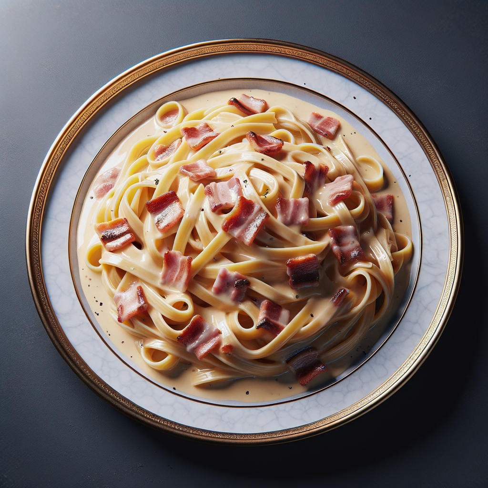
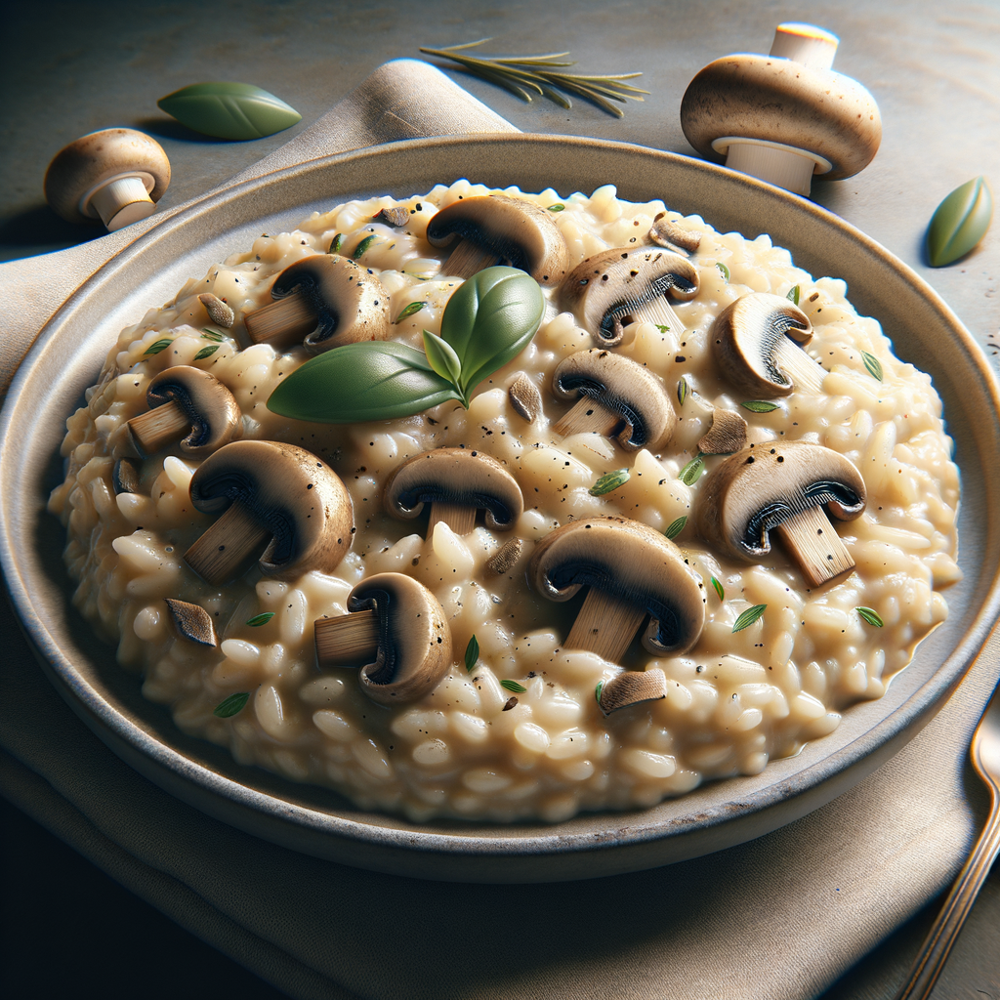
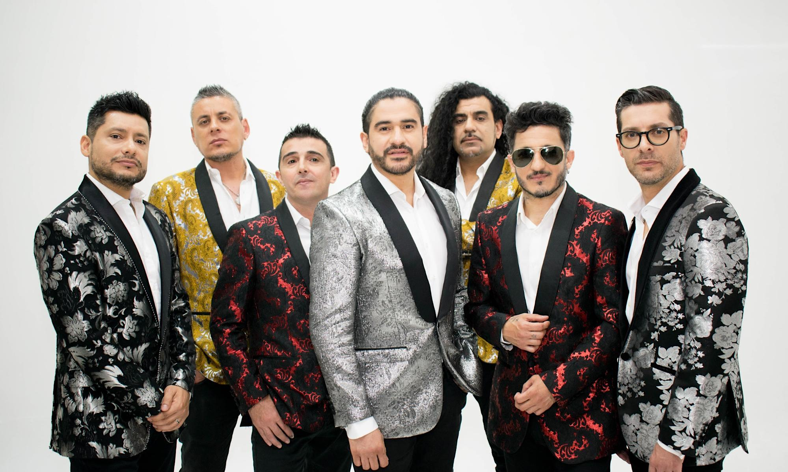
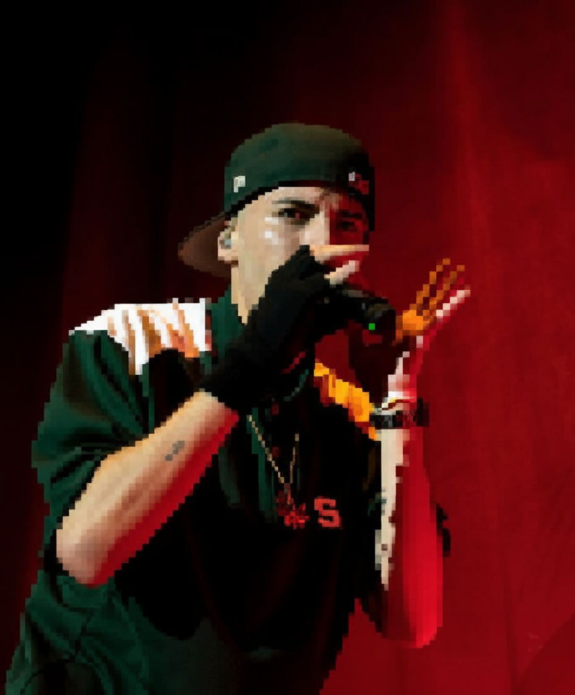

Pasta Carbonara
Cremosa, intensa y con ese toque auténtico que solo una buena carbonara puede ofrecer.
Risotto de Boletus
Cremoso, aromático y lleno de matices, ideal para quienes disfrutan de la cocina con alma.
Actualización Menú
El precio del menú pasará de $23000 a $25000, seguirá incluyendo, primer plato, segundo plato, postre, café y bebida
Próximos Eventos
¡No te pierdas nuestros próximos eventos! Consulta nuestra página de inicio para más información.
After party - Viernes 11-07-2025
¡Únete a nosotros para una noche de diversión y buena música después de la cena!
Reformas del establecimiento
Estamos llevando a cabo una serie de reformas para mejorar la experiencia de nuestros clientes. ¡Mantente atento a las novedades!
Eventos Pasados
Consulta nuestra página de inicio para ver los eventos pasados que hemos realizado.
Eventos Futuros
¡Mantente atento a nuestra página para conocer los próximos eventos que estamos organizando!
